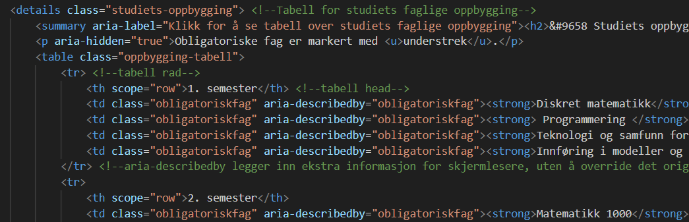
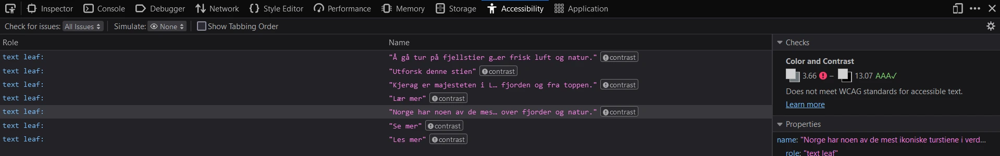

Generelt
For at nettsiden skal være lett å lese, har vi valgt farger som gir god kontrast mellom tekst og bakgrunn. Vi har lagt til alternativ tekst på alle bilder, slik at brukere av skjermlesere, eller folk med treigt internett som ikke laster bilder kan få et mer helhetlig inntrykk av innholdet.
Semantisk strukturering
Riktig bruk av semantiske elementer legger til rette for en bedre opplevelse ved bruk av skjermlesere og annen assisterende teknologi. Vi har etter beste evne strukturert nettsiden med elementer som <header>, <main> og <footer> for å bidra med forståelse av layout, og tags som <nav>, <section> og <aside> med passende headings for enklere navigering. Nærmere beskrivelse av hva de ulike elementene gjør finnes kommentert i koden.
Tabellen i "Studiets oppbygging"
For å gjøre tabellen mer lettleselig ga vi blå bakgrunnsfarge til annenhver rad. Videre brukte vi <strong> taggen for å gi emnenavnene fet skrift. Dette er positivt for skjermlesere, da de vil lese innholdet med ekstra trykk for å vise at innholdet er særlig betydelig.
For å markere forskjellen mellom obligatoriske og valgfrie fag var tanken først å markere valgfagene med blå bakgrunnsfarge, men for eventuelt fargeblinde brukere kan det være et problem. Vi valgte å løse dette ved å heller markere obligatoriske fag i tabellen med understrek. Vi innså etter hvert at det heller ikke er en fullstendig inkluderende løsning, da brukere som er avhengige av skjermlesere ikke vil oppfatte understrekingen. I jakten på en løsning på dette ble vi kjent med ARIA-attributtene. I tabellen har vi brukt aria-describedby da dette attributtet lar oss legge til ekstra informasjon for skjermlesere, uten å overskrive det originale innholdet.

Responsivt design
En viktig del av inkluderende design av nettside er å sørge for at siden er responsiv slik at den kan vises på ulike enheter. Ved bruk av @media har vi lagt til CSS kode slik at nettsiden tilpasser seg når den når visse skjermbredder. Vi har også prøvd oss fram med både grid og flexbokser, noe som er ypperlig for responsivt design. På hovedsiden har vi et grid-oppsett som viser én boks i bredden på små skjermer, to på mellomstore skjermer som laptop, og tre på ekstra store skjermer.
Vi har også sjekket nettsiden i Chrome, Edge, og Firefox for å forsikre oss om at den fungerer på tvers av nettlesere.
Automatisert test
Vi brukte Firefox sitt innebydge Inspect-verktøy for å sjekke accessibility.

Testen ga utslag om manglende kontrast på noen av tekstboksene på hovedsiden. Også teksten i boksene på Activity-siden ga utslag. Vi justerte fargene, og ga svart bakgrunn til tekstene i Activity-boksene.
Oppsummering
For å oppsummere er inkluderende design viktig for at så mange som mulig skal kunne bruke nettsiden på en tilfredsstillende måte. For å oppnå dette har vi særlig fokusert på semantisk strukturering, responsivt design, fargekontraster og alternative tekster/ARIA.